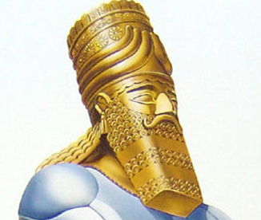

Daniel Chapter Two
Back to contents
Nebuchadnezzar's dream
In Daniel 2, we see that King Nebuchadnezzar has a particular dream that troubles him. The king happens to forget the dream and he summons the magicians, astrologers and the wise men of Babylon to come and tell him his dream and its interpretation. Having failed to do this, the king orders that all the wise men of Babylon should be slain. Word about the decree reaches Daniel, one of the wise men of Babylon, and he goes to request the king to give him time to tell the dream and its interpretation. The king grants him his request and Daniel tells his three friends about the issue, and they agree to pray about the matter. In the night season, God reveals to Daniel the king’s dream and its interpretation. On the next day, Daniel proceeds to the king to tell him his dream and its interpretation. This is his speech as recorded in Daniel chapter 2:31-35
Verse 31: Thou, O king, sawest, and behold a great image. This great image, whose brightness was excellent, stood before thee; and the form thereof was terrible. 32. This image's head was of fine gold, his breast and his arms of silver, his belly and his thighs of brass, 33. His legs of iron, his feet part of iron and part of clay. 34. Thou sawest till that a stone was cut out without hands, which smote the image upon his feet that were of iron and clay, and brake them to pieces. 35. Then was the iron, the clay, the brass, the silver, and the gold, broken to pieces together, and became like the chaff of the summer threshing- floors; and the wind carried them away, that no place was found for them; and the stone that smote the image became a great mountain, and filled the whole earth."
The king saw a great image whose head was of gold, chest and arms were of silver, the waist was of bronze, the legs were of iron and the feet were a mixture of clay and irons.
The interpretation
Daniel proceeds to tell the interpretation
VERSE 37: Thou, O king, art a king of kings; for the God of heaven hath given thee a kingdom, power, and strength, and glory. 38. And wheresoever the children of men dwell, the beasts of the field and the fowls of the heaven hath he given into thine hand, and hath made thee ruler over them all. Thou art this head of gold."
Babylon

The Babylonian kingdom was the head of gold. This kingdom, whose founder was Nimrod, was soaring in its glory during the time of King Nebuchadnezzar. It was the superpower of the then known world. Therefore, gold perfectly defined it. The city was a perfect square, 96km in circumference, 24 km on each side. The city was surrounded by a wall 106 metres high and 26 metres thick. The river Euphrates ran 24km through its center from one end to another. The riparian land was fenced with walls as huge as the city walls and with gates of bronze.
The last king of Babylon was Belshazzar. He was conquered by Cyrus, king of Mede. The king laid siege to Babylon which was the only city in the East that held against him. The Babylonians gathered themselves within the city walls with provisions for 120 years. To human probability, it was impossible to conquer Babylon. However, the Bible had predicted its fall through prophet Isaiah who mentioned Cyrus’ name 200 years before he was born. Cyrus learned learned of an approaching annual festival and he fixed upon that day to carry on his execution when the city would be given to drunkardness and carelessness. He resolved to make the River Euphrates his highway into the city. On the evening of the feast, he divided his army into three companies. The first was to divert the river into a nearby dam while the remaining two companies would wait at the point of entrance and exit of the river. In the darkness of the night, the river had been diverted successfully and the army marched into the city toward the palace. The Babylonians who entered into the festival as citizens of the mightiest nation woke up as slaves to Cyrus. Their king was killed while defending himself. The defeat of the Babylonians would be impossible were it not for their carelessness that night. At the points of entry and exit of the river, steel bars ran to the bottom of the river and these bars were left unclosed on that fateful night. Also, the gates of brass through which the river could be accessed by the Babylonians were left open. Were they not left open, the army of Cyrus would just have marched from the point of entry to the point of exit of the river without actually entering the city since the riparian land was fenced. Cyrus ruled over Medo-Persia conjointly with Darius and their kingdom was the chest and arms of silver.
Medo-Persia
Ages later, another Darius ruled over Medo-Persia. He was at constant wars with Alexander the Great of Greece. This wars greatly weakened Medo-Persia which was finally defeated by Alexander in the fatal war of Arbela in B.C. 331. Darius, having escaped, was swiftly followed by Alexander the Great. Two traitors, Bessus and Nabarzanes seized Darius and shut him up in a close cart and fled with him torward Bactria. It was their purpose, if Alexander followed them, to purchase their safety by delivering their king. After several days of pursuit, Alexander caught up with them. The traitors urged Darius to mount on horseback for a speedy flight but he refused. They therefore gave him several mortal wounds and left him dying. On seeing the corpse of Darius, Alexander’s battle hardened heart felt sorry for the king. Darius, who was sailing in glory a few months before, had suffered a most pitiful death. Alexander arranged a honourable burial for him. It is amazing that it seems that Alexander had learnt nothing from the example of Darius.
Greece
"and another third kingdom of brass, which shall bear rule over all the earth." Said the prophet.
Alexander gained victory after victory till it reached a point when his enemies had being eliminated. He then gave himself to excessive pleasure. He was invited by 20 guests where he drunk to each of his guests. He then drank twice from the Herculean cup which had a capacity of 5.6litres. All of a sudden, he shouted with pain as if struck through the liver with an arrow. After a few minutes, he could bear it no longer and left for his bedroom. Over the next ten days he became weaker and weaker. At the young age of 32, Alexander the great died at the very height of his power. Thus was the beginning of the fall of the Grecian empire which was the waist of brass.
VERSE 40-42: And the fourth kingdom shall be strong as iron; forasmuch as iron breaketh in pieces and subdueth all things; and as iron that breaketh all these things, shall it break in pieces and bruise. And whereas thou sawest the feet and toes, part of potters' clay, and part of iron, the kingdom shall be divided; but there shall be in it of the strength of the iron, forasmuch as thou sawest the iron mixed with miry clay. 42. And as the toes of the feet were part of iron, and part of clay, so the kingdom shall be partly strong, and partly broken."
Rome
Upon the death of Alexander the great, the empire was divided into four regions ruled by four generals of the Grecian army. There was continuous strife among them and the kingdom grew weaker till it was finally defeated by the Romans. The Romans thus became the feet of iron. This was an exceedingly strong kingdom and as the scripture says, it crushed its opponents till it ascended to become the superpower of the world. The strongest region was the western region of Rome which is presently the Western part of Europe. Its capital was Rome. It’s during the reign of this kingdom that Christ lived on earth and died. Later on, as the feet has ten toes, the strongest/western part of the empire was divided into ten regions:
The ten divisions
- Anglo-Saxons - England
- Franks - France
- Burgundians - Switzerland
- Visigoths - Spain
- Alamanni - Germany
- Suevi - Portugal
- Lombards - Italy
- Heruli - Destroyed (A.D. 493)
- Vandals - Destroyed (A.D. 534)
- Ostrogoths - Destroyed (A.D. 538)
VERSE 43: “And whereas thou sawest iron mixed with miry clay, they shall mingle themselves with the seed of men: but they shall not cleave one to another, even as iron is not mixed with clay.”
For centuries the nations of Europe have endeavored to be united again under a central government. Neither by force, nor by diplomacy have men and women succeeded in foraging the iron and clay together. Wars have been fought but to no avail. Marriages formed to unite the nations under one ruler. All monarchies of Europe are related to each other through intermarriage, but the division still stands, as the word of God foretold. The prophecy says, “they shall not cleave one to another.”
Charlemagne tried to bring Europe under one kingdom, so did Charles V, Louis XIV, Napoleon, Wilhelm, Hitler, and the European Common Market. Although they have appeared to succeed for a time, there has been and will not be a permanent cohesion.
What Is the Next Event?
The Stone Cut Out Without Hands
“And in the days of these kings shall the God of heaven set up a kingdom, which shall never be destroyed: and the kingdom shall not be left to other people, but it shall break in pieces and consume all these kingdoms, and it shall stand for ever. Forasmuch as thou sawest that the stone was cut out of the mountain without hands, and that it brake in pieces the iron, the brass, the clay, the silver, and the gold; the great God hath made known to the king what shall come to pass hereafter: and the dream is certain, and the interpretation thereof sure.” Daniel 2:44, 45.
Here is the climax of this great prophecy. The final act in the drama of the world empires is the establishment of the kingdom of God. This is certain! Just as the previous symbols were all exactly fulfilled in the course of history, so we know that this final part will also come to pass. Daniel said: “The dream is certain, and the interpretation thereof sure.” We are instructed to study the historic fulfillment of Bible prophecy and to be assured of their truth: “Seek ye out of the book of the Lord, and read: no one of these shall fail, none shall want her mate: for my mouth it hath commanded, and his spirit it hath gathered them.” Isaiah 34:16.
It is in the days of the last kingdoms of iron and clay, that the kingdom of Christ will come. Christ will return, not as the Lamb of God, but as King of kings, as a mighty conqueror. His kingdom does not depend on human support, it is the kingdom of Heaven, a stone cut out without hands. His kingdom, unlike the human kingdoms, is everlasting and shall stand forever.
Jesus will soon return, but before He does He seeks first to establish His kingdom in the hearts of men. Dear friend, will you allow the Prince of Peace to rule your heart now, so that when He comes you may inherit the Kingdom of Heaven?